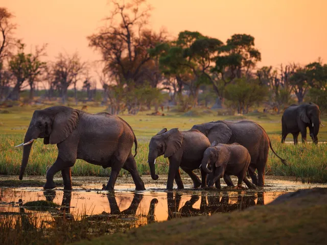
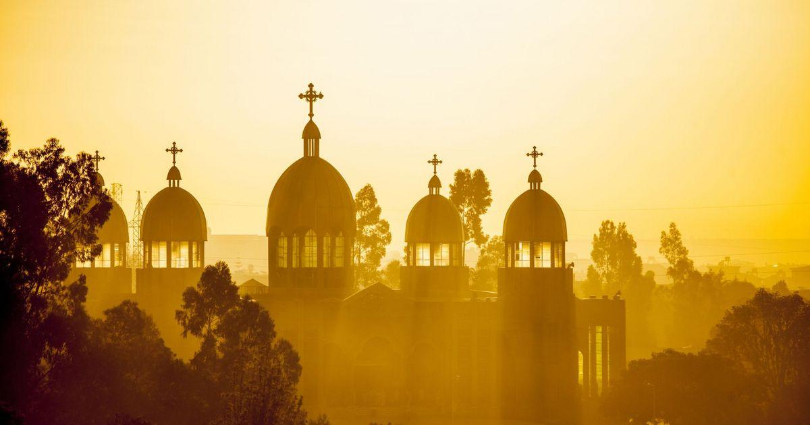
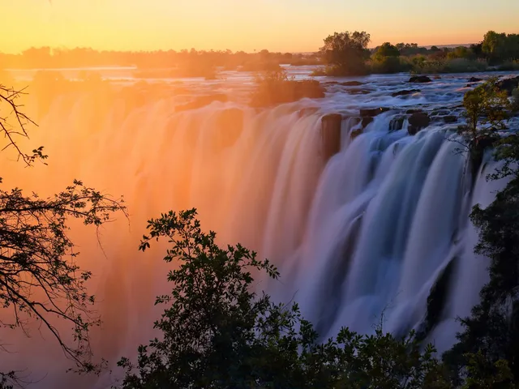
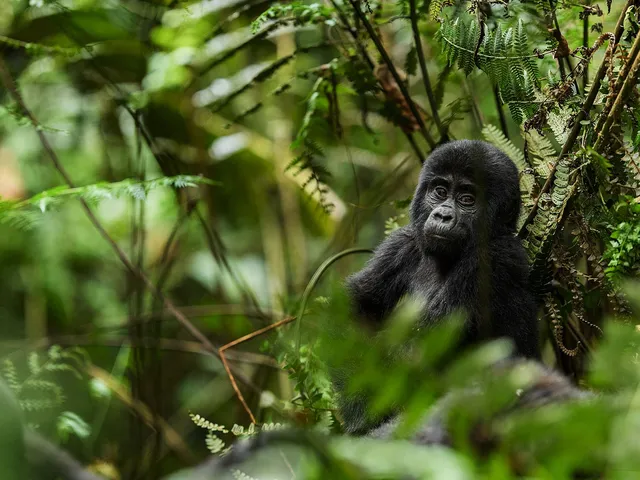

Start / Reiseziele
Unsere schönsten Reiseziele
Entdecken Sie die Reiseziele von Africa Royal Tours – mit Originaltexten und individuell geplanten Reisen aus dem veröffentlichten Portfolio.







Reiseberatung aus erster Hand
Sie haben schon ein Ziel im Kopf?
Wir planen mit Ihnen die passende Route – individuell und unverbindlich.